A redesign of Google Gemini's iOS app focused on improving the feedback experience, home screen personalization, and chat interaction clarity.
Google Gemini is one of the most capable AI assistants available, but its iOS app leaves a lot of friction on the table. The feedback system is buried, the home screen feels generic, and the chat experience lacks the visual clarity that helps users trust and learn from AI responses. This redesign targets three specific interaction gaps.
The thumbs-down flow buries context options in a modal with no clear affordance. Users who want to report bad output have to hunt for it.
"Let's jump in" with generic suggestion cards doesn't reflect what the user actually cares about. It misses a chance to be genuinely useful on open.
Code blocks, headers, and lists render inconsistently, making complex answers hard to parse on a small screen.
The splash screen sets the tone: clean, dark, centered. One action.
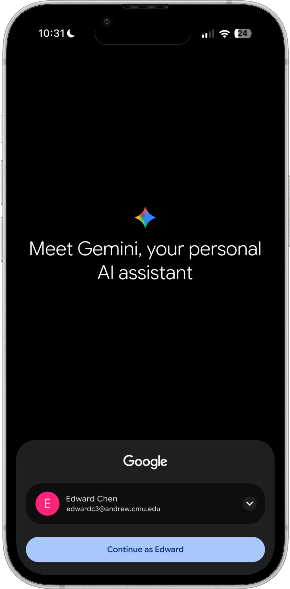
Cards adapt to context: time of day, location, and recent sessions. "For your evening" and "Pick up where you left off" give users two clear entry points every time.
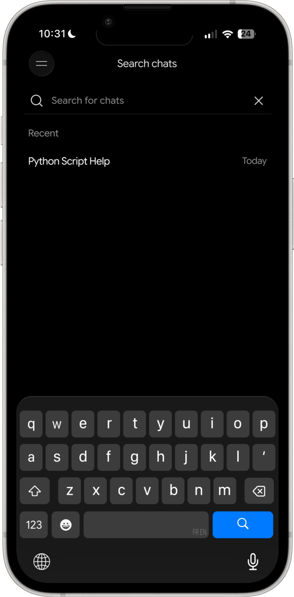
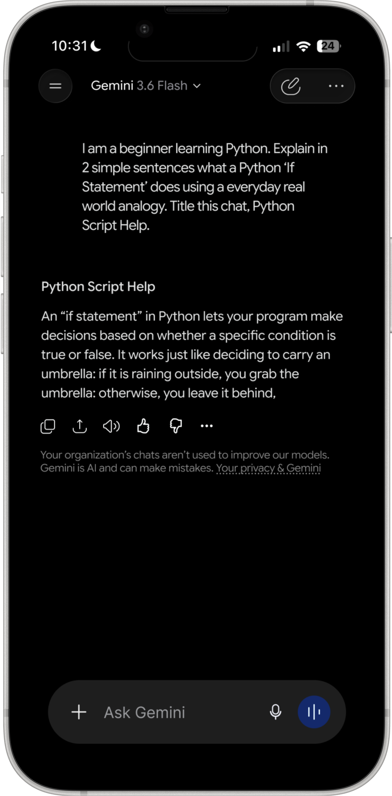
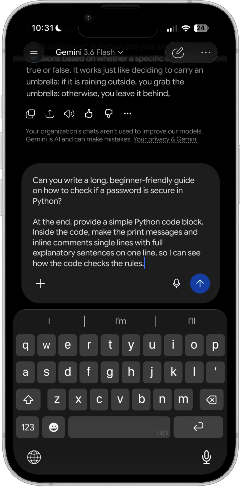
Navigation stays minimal. The drawer surfaces core actions (new chat, search, images, library) without overwhelming. Chat search is fast and clean.
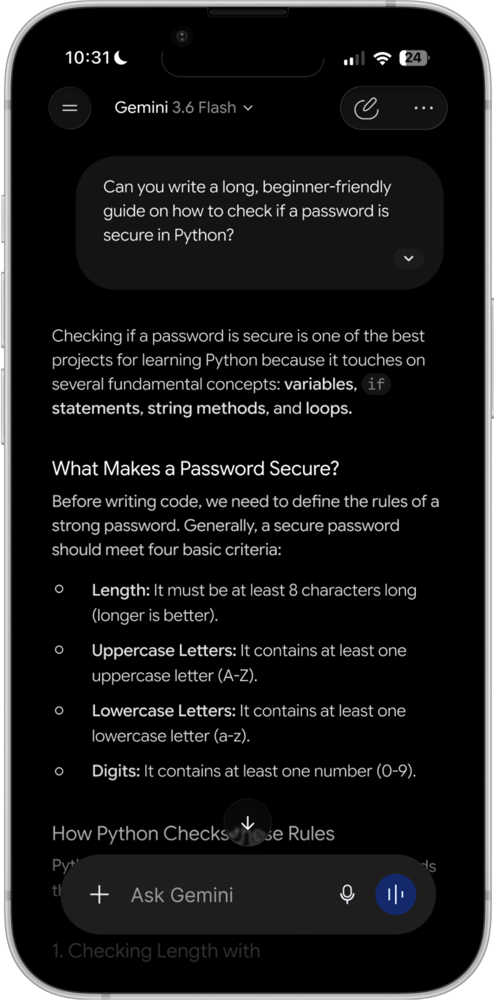
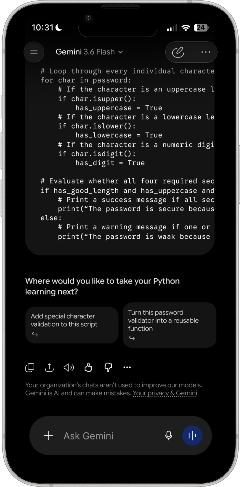
Short answers are presented cleanly. No extra chrome. The input bar stays fixed and accessible at the bottom.
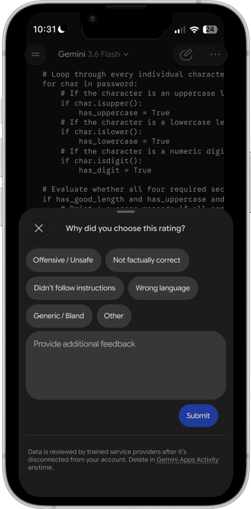
The input expands as the user types, giving the prompt room to breathe before sending. The send button is always visible.
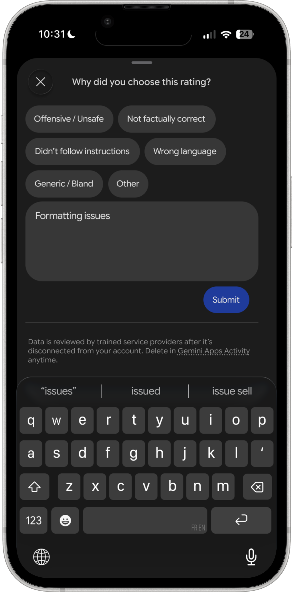
Headers and lists break up long answers. Code keywords are visually distinguished inline. A scroll-to-bottom affordance prevents users from getting lost.
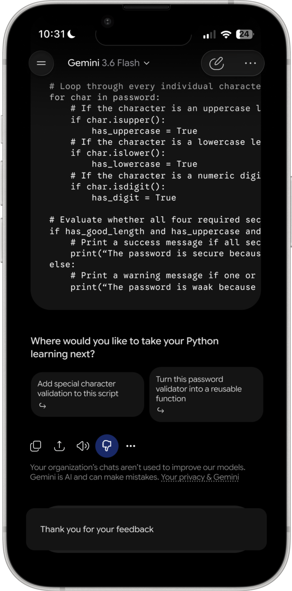
After a code response, Gemini surfaces two contextual next-step prompts. This keeps the learning momentum going without the user needing to think of what to ask next.
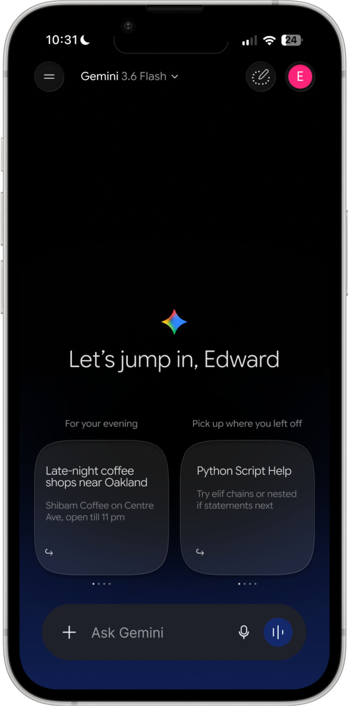
Tapping thumbs down immediately surfaces a bottom sheet with clear categories. Users can add freeform context, then submit. The confirmation state is subtle: a toast message, not a disruptive modal.
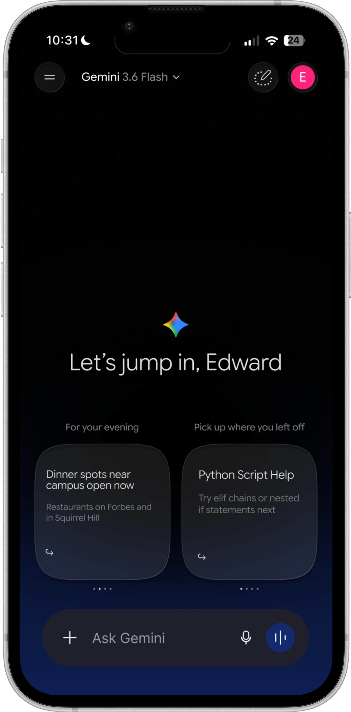
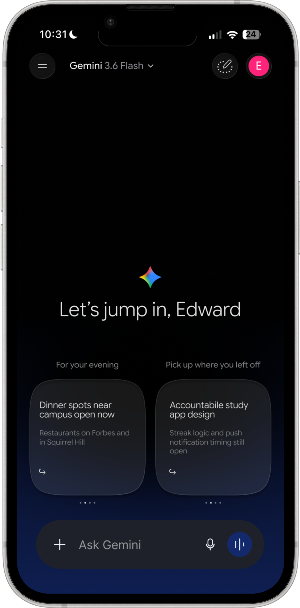
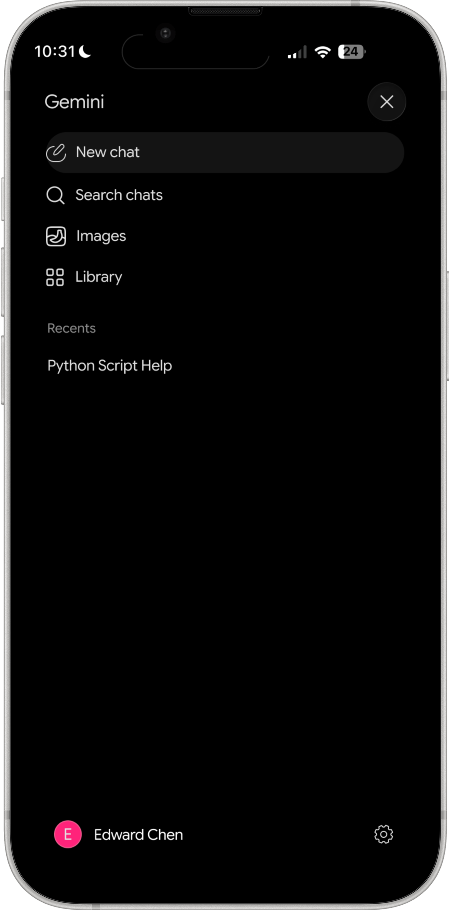
This project pushed me to think about AI interfaces differently, not just as chat windows, but as adaptive surfaces that should respond to who you are and what you're doing.
The feedback redesign was the most constrained problem: how do you make reporting feel frictionless without making the UI feel paranoid or over-engineered? The answer was reducing steps, not adding options.
If I continued this project, I'd explore how Gemini's home screen could learn across sessions, surfacing the right context before the user even has to ask.